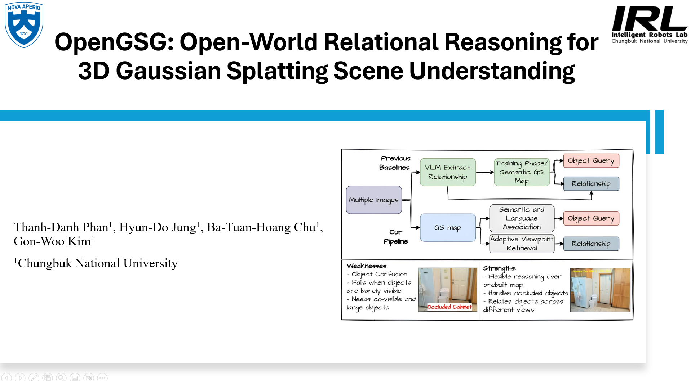
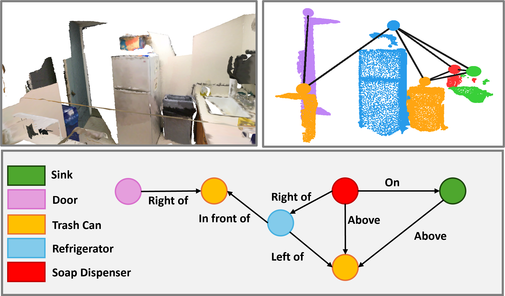
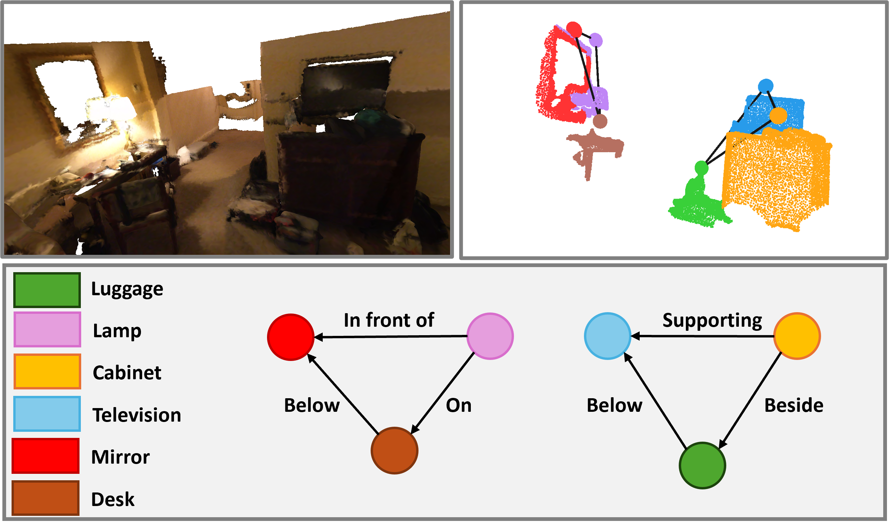
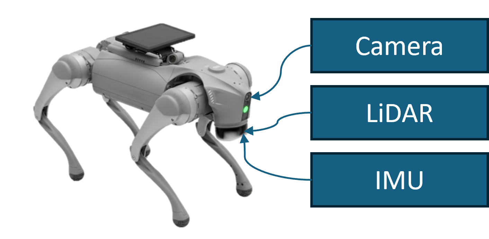

Abstract
3D Gaussian Splatting has recently emerged as a powerful scene representation, yet existing 3DGS-based scene understanding has predominantly addressed object-level perception, leaving inter-object reasoning comparatively underexplored. Modeling such relationships through open-vocabulary 3D scene graphs is essential for higher-level tasks such as navigation, manipulation, and language-grounded reasoning.
We propose OpenGSG, a unified framework that exploits 3D Gaussian Splatting as a generative intermediate representation for both object nodes and relational edges. For nodes, graph-regularized clustering over supervoxels is refined to obtain geometrically coherent instances aligned with multi-view vision-language captions. For edges, relational reasoning is reformulated as geometry-aware viewpoint synthesis, enabling zero-shot relationship inference from synthesized views.
Presenation Video

Pipeline Overview

Object Query Results

3D SceneGraph Prediction


Downstream Tasks
